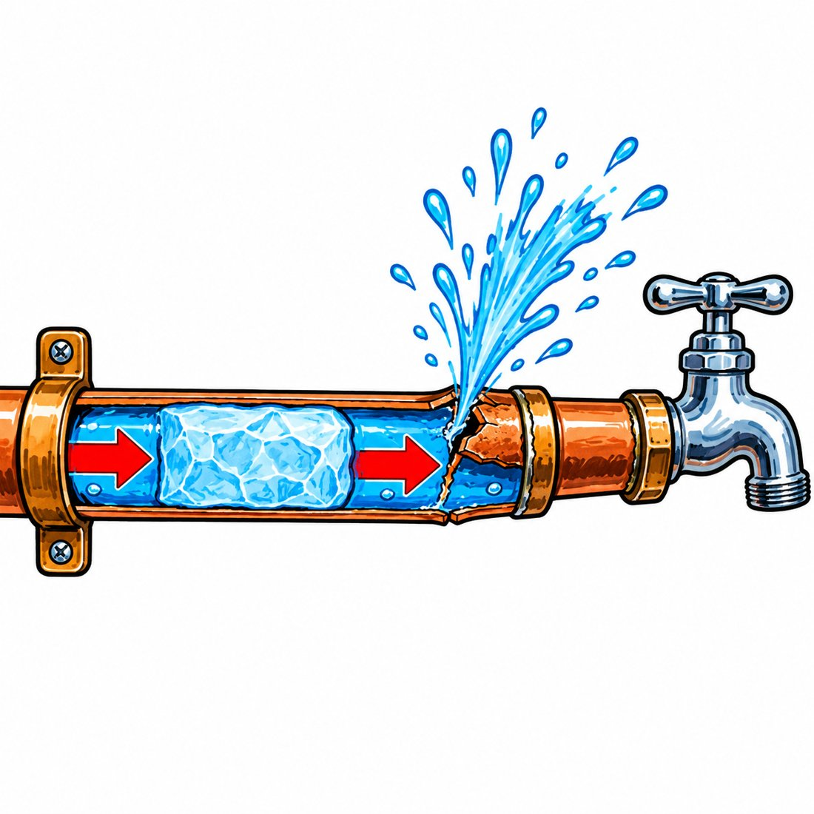
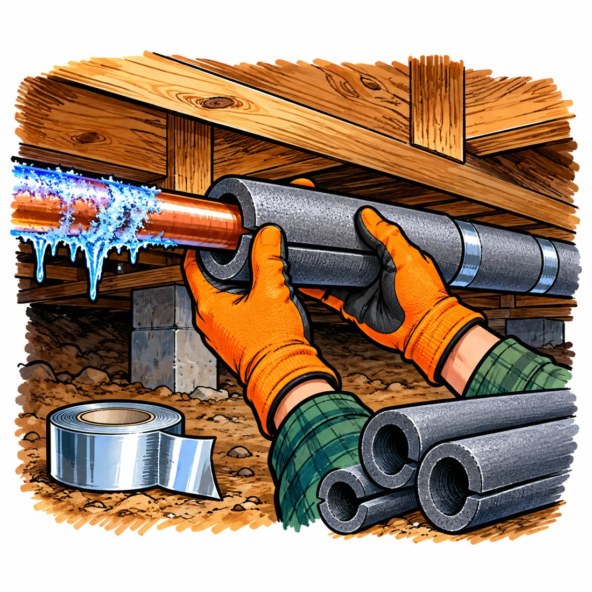
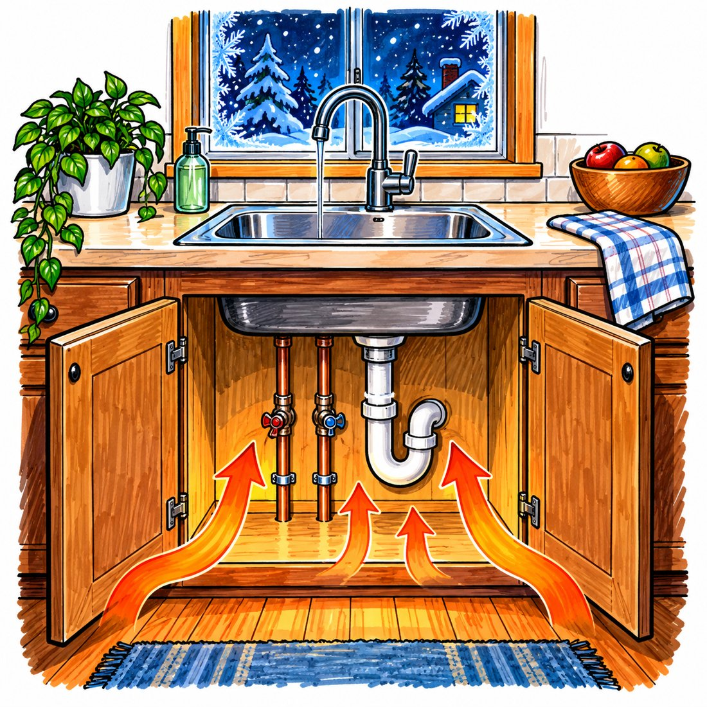

The drip is the part that actually saves the pipe, and most people drip the wrong tap. Once you see how a pipe really bursts, you will know which one.

Ice starts as a skin on the inside of the pipe wall, thickens inward, and finally closes the channel into a solid plug. Small pipes freeze first, because they lose their heat fast.
Water grows about 9 percent when it freezes. On the street side of the plug, water can move back toward the main, so no harm. On the other side, a trapped column of water sits against a closed faucet.
Water barely compresses, so the growing plug works like a piston. The pipe splits downstream at the weakest point, often where there is no ice. The plug seals the split while frozen. Then it thaws and full pressure pours through the crack.
Open the faucet at the end of that trapped column and the water is not trapped anymore. When the plug grows, it pushes water out the tap instead of building pressure.
The drip helps a second way. A moving stream keeps swapping chilled water for fresh water from the main, which runs underground and stays above freezing. Freezing pulls a huge amount of heat out of water, the same as cooling it another 144 degrees, which is why a pipe takes hours to freeze.
Aim for a thin, steady stream, about the width of a pencil leadOne lonely drip relieves pressure but barely moves water. A thin stream overnight costs well under a dollar. A burst pipe costs thousands.
Pex, the flexible plastic tubing, stretches and survives freezes that split copper. The brass fittings do not stretch, so the same drip rule applies.
A smart shutoff valve like a Moen Flo runs about 500 to 700 dollars plus a plumber. It is a good backstop, but it cannot stop ice from forming, and it can read your overnight drip as a leak and shut the main. If you own one, set it to allow the drip on freezing nights.
Winter storm Uri, February 2021, Texas: about half a million insurance claims, about 85 percent of them home property claims, many from burst pipes. Insured losses reached about ten billion dollars. One Waco plumber went from about 40 calls a day to between 120 and 200, and parts took 3 to 10 weeks. A woman near Waco lived nearly a year without running water.

University of Illinois field tests found uninsulated attic pipes start freezing when the outside air falls to about 20 degrees. Southern plumbers said burst calls start in the teens. So 20 degrees is your alarm. When the forecast crosses it, the drip goes on. Wind makes it worse, so close crawlspace vents for the snap and foam any gaps near the pipes.
